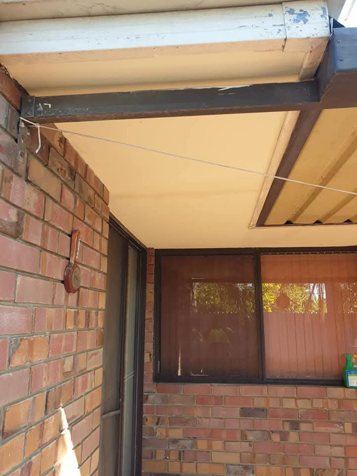
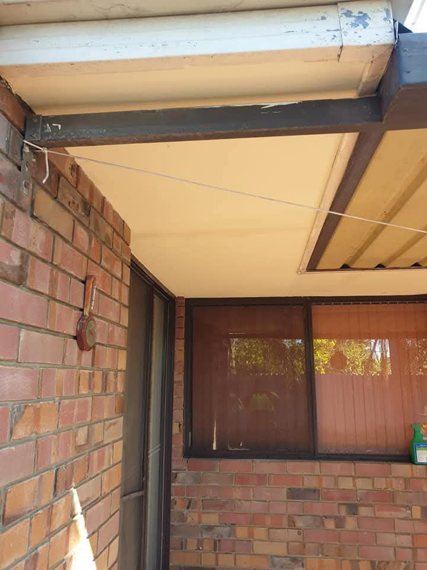

Our Building Maintenance & Renovation Services
General & Emergency Maintenance
- Painting (Interior & Exterior)
- Make Safe / Emergency After Hours Services
- Gutter Cleaning & Repairs / Replacements
- Rubbish Removal
- Ceiling Repairs / Replacements
Renovations & Installations
- New Home Finishes
- Complete Home Renovations (including kitchen & bathroom)
- Kitchen Installations / Renovations
- Door Installations & Repairs
- Floating Floor Installation
- Shop Fit Outs
- Specialized Building Work
And much more! We offer comprehensive solutions for all your commercial, residential, and strata building needs in all Perth regions.

 
